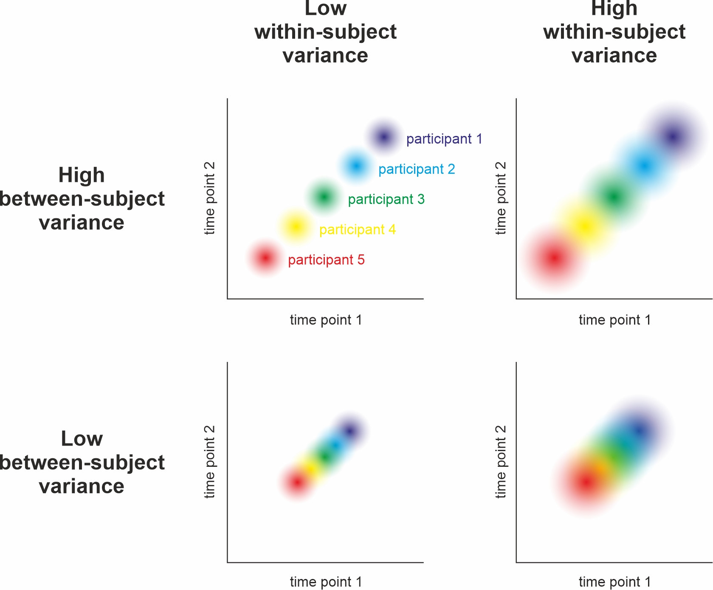
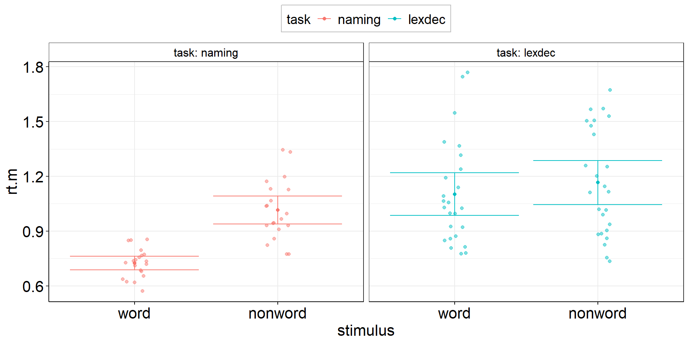
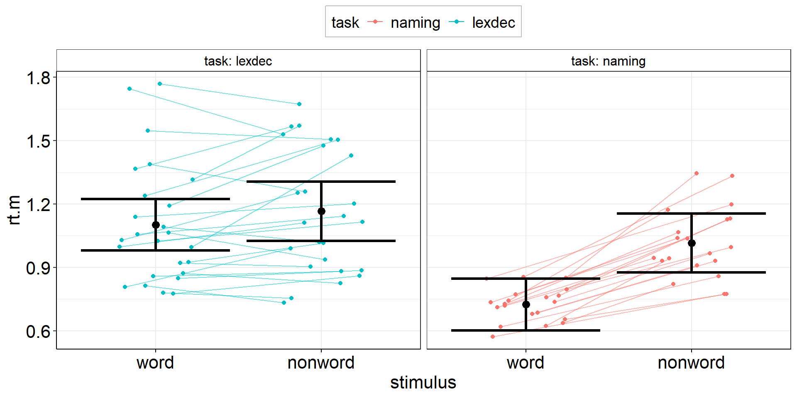
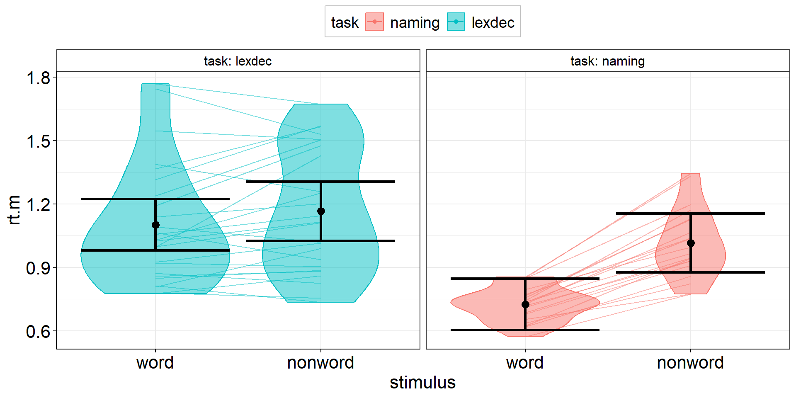
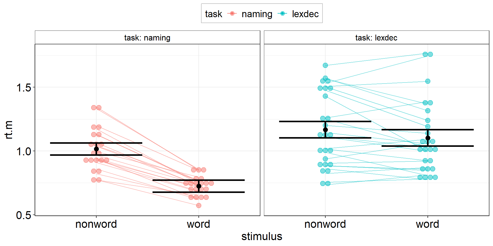
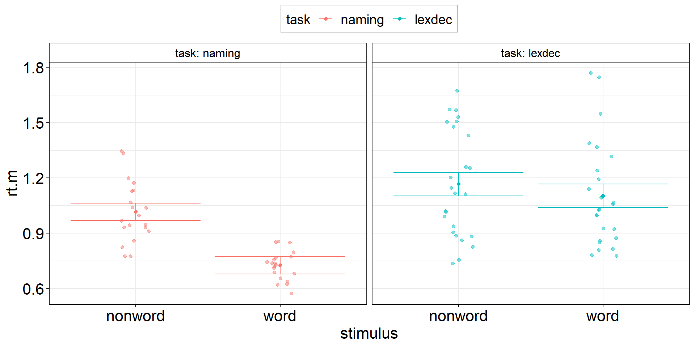
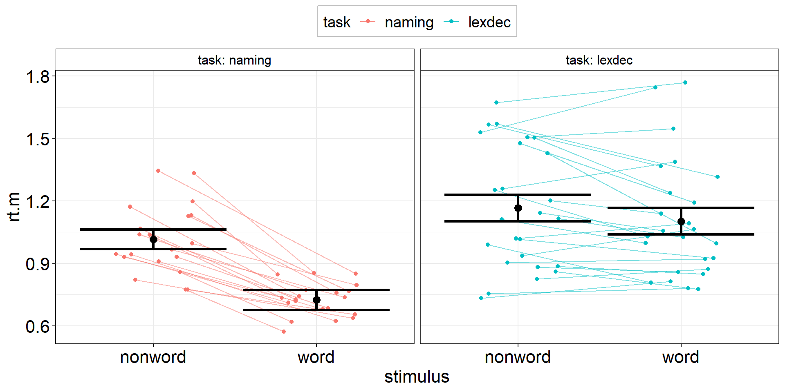
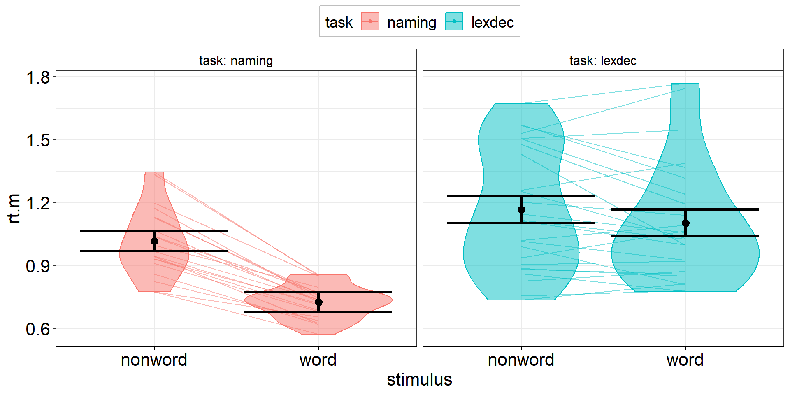

Workshop: “Handling Uncertainty in your Data”
In the previous part, you learned about CIs around means and effect sizes.
CIs around means are for Figures.
CIs around effect sizes are for the statistical reporting section.
In this part, we will visualize CIs around means for:
t-tests (one sample, independent samples, & paired samples),
ANOVAs (a simple 2x2 interaction),
and correlations.
You have already learned how to calculate CIs around their effect sizes (Cohen’s d, \(\eta_p^2\), and Pearson’s r)
The default options in ggplot have some problems: Most importantly, text is too small. The easiest solution is to create your own theme that you apply to your plots.
I am currently using this theme adapted from an old script of Lara Rösler.
theme_set( # theme_set has to be executed every session; cf. library(tidyverse)
myGgTheme <- # you can save your theme in a local variable instead, add it to every plot, and save your environment across sessions
theme_bw() + # start with the black-and-white theme
theme(
#aspect.ratio = 1,
plot.title = element_text(hjust = 0.5),
panel.background = element_rect(fill = "white", color = "white"),
legend.background = element_rect(fill = "white", color = "grey"),
legend.key = element_rect(fill = "white"),
strip.background = element_rect(fill = "white"),
axis.ticks.x = element_line(color = "black"),
axis.line.x = element_line(color = "black"),
axis.line.y = element_line(color = "black"),
axis.text = element_text(color = "black"),
axis.text.x = element_text(size = 16, color = "black"),
axis.text.y = element_text(size = 16, color = "black"),
axis.title = element_text(size = 16, color = "black"),
legend.text = element_text(size = 14, color = "black"),
legend.title = element_text(size = 14, color = "black"),
strip.text = element_text(size = 12, color = "black"))
)Are the mean reaction times for naming words faster than 1 sec?
ostt <-
fhch2010_summary_wordnaming %>%
summarize(
rt.m = mean(rt), #careful! if you do rt = mean(rt), you cannot calculate ci_mean(rt) afterwards
rt.m.low = confintr::ci_mean(rt)$interval[[1]], #not tidyverse-friendly :/
rt.m.high = confintr::ci_mean(rt)$interval[[2]]) %>%
ggplot(aes(y = rt.m, x = "naming words")) +
geom_point() + #plot the mean
geom_errorbar(aes(ymin = rt.m.low, ymax = rt.m.high)) + #plot the CI
geom_hline(yintercept = 1, linetype = "dashed") #plot the population mean to test againstPossible to use t.test() instead of confintr::ci_mean()!
ostt2 <-
fhch2010_summary_wordnaming %>%
summarize(
rt.m = mean(rt),
rt.m.low = t.test(rt)$conf.int[1], # also not tidy
rt.m.high = t.test(rt)$conf.int[2]) %>%
ggplot(aes(y = rt.m, x = "naming words")) +
geom_point() +
geom_errorbar(aes(ymin = rt.m.low, ymax = rt.m.high)) +
geom_hline(yintercept = 1, linetype = "dashed")Are the mean reaction times for naming words different from lexically identifying words?
fhch2010_summary_words <-
fhch2010_summary %>%
filter(stimulus == "word")
with(fhch2010_summary_words,
t.test(rt ~ task) #Welch test
#t.test(rt ~ task, var.equal = TRUE) #assume equal variances
) #%>% apa::t_apa(es_ci = TRUE) #does not work for Welch test :(
Welch Two Sample t-test
data: rt by task
t = -6.351, df = 28.554, p-value = 6.55e-07
alternative hypothesis: true difference in means between group naming and group lexdec is not equal to 0
95 percent confidence interval:
-0.5003253 -0.2564522
sample estimates:
mean in group naming mean in group lexdec
0.7241744 1.1025631 istt <-
fhch2010_summary_words %>%
summarize(
.by = task, #for more complex summaries, I like to put the .by argument first
rt.m = mean(rt), #careful! if you do rt = mean(rt), you cannot calculate ci_mean(rt) afterwards
rt.m.low = confintr::ci_mean(rt)$interval[[1]], #not tidyverse-friendly :/
rt.m.high = confintr::ci_mean(rt)$interval[[2]]) %>%
ggplot(aes(y = rt.m, x = task)) +
geom_point() + #plot the means
geom_errorbar(aes(ymin = rt.m.low, ymax = rt.m.high)) #plot the CIsRemember: confintr::ci_mean is for obtaining CIs to test a single mean against a fixed (errorless) number (most often 0).
⇒ Use confintr::ci_mean_diff to get the CI that accounts for the uncertainty in both means.
istt2 <-
fhch2010_summary_words %>%
pivot_wider(names_from = task, values_from = rt) %>%
summarize(
rt.m = mean(naming, na.rm = TRUE) - mean(lexdec, na.rm = TRUE), #difference of the means == mean difference
rt.m.low = confintr::ci_mean_diff(naming, lexdec)$interval[[1]], #not tidyverse-friendly :/
rt.m.high = confintr::ci_mean_diff(naming, lexdec)$interval[[2]]) %>%
ggplot(aes(y = rt.m, x = "difference")) +
geom_point() + #plot the mean difference
geom_errorbar(aes(ymin = rt.m.low, ymax = rt.m.high)) + #plot the difference CI
geom_hline(yintercept = 0, linetype = "dashed") #plot the population mean to test againstistt3 <-
fhch2010_summary_words %>%
pivot_wider(names_from = task, values_from = rt) %>%
summarize(
rt.m = mean(naming, na.rm = TRUE) - mean(lexdec, na.rm = TRUE),
rt.m.low = t.test(naming, lexdec)$conf.int[1], # also not tidy
rt.m.high = t.test(naming, lexdec)$conf.int[2]) %>%
ggplot(aes(y = rt.m, x = "difference")) +
geom_point() +
geom_errorbar(aes(ymin = rt.m.low, ymax = rt.m.high)) +
geom_hline(yintercept = 0, linetype = "dashed")Are the mean reaction times for naming words different from naming non-words?
fhch2010_summary_naming <-
fhch2010_summary %>%
filter(task == "naming")
# with(fhch2010_summary_naming, t.test(rt ~ stimulus, paired = TRUE)) #not allowed anymore :(
# fhch2010_summary_naming %>% rstatix::t_test(rt ~ stimulus, paired = TRUE, detailed = TRUE) # alternative!
with(fhch2010_summary_naming %>%
pivot_wider(names_from = stimulus, values_from = rt, id_cols = id), #make pairing by id explicit
t.test(word, nonword, paired = TRUE)) %>%
apa::t_apa(es_ci = TRUE) # output to APA formatt(19) = -12.87, p < .001, d = -2.88 [-3.88; -1.86]
There is a difference between the precision of the means (aggregated across subjects) and the
precision of the paired differences (paired within the same subjects and then aggregated across).
Remember this plot? Between- and within-subject variance can be (partially) independent.
cf. Nebe, Reutter, et al. (2023); Fig. 2
Between-subject variance does not affect within-subject variance but
within-subject variance increases the estimate of between-subject variance (Baker et al., 2021, Fig. 1)
Pfister & Janczyk (2013), Fig. 1
The paired samples t-test of two factor levels
with(fhch2010_summary_naming %>%
pivot_wider(names_from = stimulus, values_from = rt, id_cols = id), #make pairing by id explicit
t.test(word, nonword, paired = TRUE)) %>%
apa::t_apa(es_ci = TRUE) # output to APA formatt(19) = -12.87, p < .001, d = -2.88 [-3.88; -1.86]… is the one sample t-test of the paired differences (i.e., slopes between the factor levels).
with(fhch2010_summary_naming %>%
pivot_wider(names_from = stimulus, values_from = rt, id_cols = id) %>% #make pairing by id explicit
mutate(diff = word - nonword),
t.test(diff)) %>% # one sample t-test of paired differences
apa::t_apa(es_ci = TRUE) # output to APA formatt(19) = -12.87, p < .001, d = -2.88 [-3.88; -1.86]pstt <-
fhch2010_summary_naming %>%
pivot_wider(names_from = stimulus, values_from = rt, id_cols = id) %>% #make pairing by id explicit
mutate(diff = word - nonword) %>%
#almost identical to one sample t-test from here
summarize(diff.m = mean(diff),
diff.m.low = confintr::ci_mean(diff)$interval[[1]],
diff.m.high = confintr::ci_mean(diff)$interval[[2]]) %>%
ggplot(aes(y = diff.m, x = "naming words vs. non-words")) +
geom_point() + #plot the mean
geom_errorbar(aes(ymin = diff.m.low, ymax = diff.m.high)) + #plot the CI
geom_hline(yintercept = 0, linetype = "dashed") #plot the population mean to test againstIs the reaction time difference between words and non-words different for naming vs. lexical decision?
aov_words <-
afex::aov_ez(
id = "id",
dv = "rt",
data = fhch2010_summary,
between = "task",
within = "stimulus",
# we want to report partial eta² ("pes"), and include the intercept in the output table ...
anova_table = list(es = "pes", intercept = TRUE))
aov_words %>% apa::anova_apa() #optional: slightly different (APA-conform) output Effect
1 (Intercept) F(1, 43) = 904.33, p < .001, petasq = .95 ***
2 task F(1, 43) = 15.76, p < .001, petasq = .27 ***
3 stimulus F(1, 43) = 77.24, p < .001, petasq = .64 ***
4 task:stimulus F(1, 43) = 31.89, p < .001, petasq = .43 ***Within-effect modulated by between-variable:
Is the reaction time difference between words and non-words different for naming vs. lexical decision?
aov1 <-
fhch2010_summary %>%
pivot_wider(names_from = "stimulus", values_from = "rt", id_cols = c(id, task)) %>%
mutate(diff = word - nonword) %>%
summarize(
.by = task, #for each condition combination
diff.m = mean(diff),
diff.m.low = confintr::ci_mean(diff)$interval[[1]],
diff.m.high = confintr::ci_mean(diff)$interval[[2]]) %>%
ggplot(aes(y = diff.m, x = task)) +
geom_point() + #plot the mean
geom_errorbar(aes(ymin = diff.m.low, ymax = diff.m.high)) + #plot the CI
geom_hline(yintercept = 0, linetype = "dashed") #plot the population mean to test againstBetween-effect modulated by within-variable:
Is the reaction time difference between naming and lexical decision different for words vs. non-words?
aov2 <-
fhch2010_summary %>%
pivot_wider(names_from = task, values_from = rt, id_cols = c(id, stimulus)) %>%
summarize(
.by = stimulus, # task is implicitly kept due to pivot_wider
ci.length = confintr::ci_mean_diff(naming, lexdec)$interval %>% diff(), # do this first so we can overwrite naming & lexdec
# ci.length = t.test(naming, lexdec)$conf.int %>% diff(), # alternative - same results!
naming = mean(naming, na.rm = TRUE),
lexdec = mean(lexdec, na.rm = TRUE)
) %>%
pivot_longer(cols = c(naming, lexdec), names_to = "task", values_to = "rt.m") %>%
ggplot(aes(y = rt.m, x = task, color = stimulus)) +
facet_wrap(vars(stimulus), labeller = label_both) +
geom_point(position = position_dodge(.9)) + # explicitly specify default width = .9
geom_errorbar(aes(ymin = rt.m - ci.length/2, ymax = rt.m + ci.length/2),
position = position_dodge(.9)) + # explicitly specify default width = .9
theme(legend.position = "top")Between-effect modulated by within-variable:
Is the reaction time difference between naming and lexical decision different for words vs. non-words?
aov2 <-
fhch2010_summary %>%
# alternative: spare the first pivot by using base R indexing
summarize(
.by = stimulus,
ci.length = confintr::ci_mean_diff(rt[task == "naming"], rt[task == "lexdec"])$interval %>% diff(),
naming = mean(rt[task == "naming"]),
lexdec = mean(rt[task == "lexdec"])
) %>%
pivot_longer(cols = c(naming, lexdec), names_to = "task", values_to = "rt.m") %>%
ggplot(aes(y = rt.m, x = task, color = stimulus)) +
facet_wrap(vars(stimulus), labeller = label_both) +
geom_point(position = position_dodge(.9)) + #explicitly specify default width = .9
geom_errorbar(aes(ymin = rt.m - ci.length/2, ymax = rt.m + ci.length/2),
position = position_dodge(.9)) + #explicitly specify default width = .9
theme(legend.position = "top")There are methods to draw within-subject errors directly on marginal means instead of on paired differences (e.g., Morey, 2008).
While this is okay for the simplest design including one within-variable with just two factor levels, this already becomes problematic at 3 levels because sphericity may not hold, i.e., the variance may be heterogenous across paired differences (level 1-2 vs. 2-3).
→ If the CI for 1-2 is small but CI for 2-3 is large. What do you plot on factor level 2?
⇒ The within-subjects standard error is a characteristic of paired differences and should thus not be plotted on factor levels.
What is the correlation between reactions to words and non-words in the naming task?
We want to include subject-level CIs, so we need to start with the trial-level data!
fhch2010_summary2 <-
afex::fhch2010 %>% #trial-level data!
filter(task == "naming") %>%
summarize(.by = c(id, task, stimulus), #retain task column for future reference
rt.m = mean(rt),
rt.m.low = confintr::ci_mean(rt)$interval[[1]], #subject-level CIs!
rt.m.high = confintr::ci_mean(rt)$interval[[2]]) #subject-level CIs!
correl <-
with(fhch2010_summary2 %>%
pivot_wider(names_from = stimulus, values_from = rt.m, id_cols = id),
cor.test(word, nonword)) %>% apa::cor_apa(r_ci = TRUE, print = FALSE)
correl[1] "r(18) = .89 [.73; .96], p < .001"correlplot <-
fhch2010_summary2 %>%
pivot_wider(names_from = stimulus, values_from = starts_with("rt.m")) %>% #also rt.m.low & rt.m.high
ggplot(aes(x = rt.m_nonword, y = rt.m_word)) + #non-words vs. words
stat_smooth(method = "lm", se = TRUE) + #linear regression line with confidence bands
geom_point() + #rt means of individual subjects
geom_errorbarh(aes(xmin = rt.m.low_nonword, xmax = rt.m.high_nonword)) + #horizontal CIs: non-words
geom_errorbar (aes(ymin = rt.m.low_word, ymax = rt.m.high_word)) + #vertical CIs: words
geom_label(aes(x = min(rt.m.low_nonword), y = max(rt.m.high_word)), #statistics to show off
hjust = "inward",
label = correl) +
coord_equal() #same scaling on both axes (even though break tics are different)Error bars for non-words are bigger!
⇒ More non-word trials to increase precision and stabilize correlation estimation?
As we see from the previous scatter plot, it is informative to see individual “raw data” points. Wouldn’t this be nice to have for the group-differences plots (t-tests + ANOVA), too?
With ggplot, we can simply add a new layer on our previous plots aov1 and aov2.
Quick technical note: Usually, we do not visualize the “raw” (trial-level) data but the subject-level aggregates (→ we could always visualize subject-level precision!).
aov1 +
geom_dotplot( # experts can try ggbeeswarm::geom_beeswarm()
data = fhch2010_summary %>% #I should have saved this calculation step...
pivot_wider(names_from = "stimulus", values_from = "rt", id_cols = c(id, task)) %>%
mutate(diff.m = word - nonword), #if we call this diff.m, it conforms to aov1
#aes(y = diff.m, x = task), #inherited from aov1
binaxis = "y",
stackdir = "center",
alpha = .5
)
aov2 +
geom_dotplot( # experts can try ggbeeswarm::geom_beeswarm()
data = fhch2010_summary %>% rename(rt.m = rt), #conform to naming in aov2
#aes(y = rt.m, x = task), #inherited from aov2
aes(fill = stimulus), #dotplot dots have color = outer border, fill = inner color
binaxis = "y",
stackdir = "center",
alpha = .5
)
Now that we have added individual points, can we also add individual slopes to show the variability in within-subject changes between words and nonwords?
aov3 <-
fhch2010_summary %>%
pivot_wider(names_from = stimulus, values_from = rt, id_cols = c(id, task)) %>%
summarize(
.by = task, # stimulus is implicitly kept due to pivot_wider
ci.length = confintr::ci_mean(word - nonword)$interval %>% diff(), # do this first so we can overwrite word & nonword
# ci.length = t.test(word, nonword, paired = TRUE)$conf.int[1:2] %>% diff(), # alternative - same result!
word = mean(word, na.rm = TRUE),
nonword = mean(nonword, na.rm = TRUE)
) %>%
pivot_longer(cols = c(word, nonword), names_to = "stimulus", values_to = "rt.m") %>%
ggplot(aes(y = rt.m, x = stimulus, color = task)) + # task and stimulus switched compared to aov2
facet_wrap(vars(task), labeller = label_both) + # task and stimulus switched compared to aov2
geom_point(position = position_dodge(.9)) + # explicitly specify default width = .9
geom_errorbar(aes(ymin = rt.m - ci.length/2, ymax = rt.m + ci.length/2),
position = position_dodge(.9)) + # explicitly specify default width = .9
myGgTheme +
theme(legend.position = "top")
aov3 +
geom_dotplot( # experts can try ggbeeswarm::geom_beeswarm()
data = fhch2010_summary %>% rename(rt.m = rt), #conform to naming in aov3
#aes(y = rt.m, x = stimulus), #inherited from aov3
aes(fill = task), #dotplot dots have color = outer border, fill = inner color
binaxis = "y",
stackdir = "center",
alpha = .5
) +
geom_line( #add individual slopes
data = fhch2010_summary %>% rename(rt.m = rt), #conform to naming in aov3
aes(group = id), #one line for each subject; sometimes you need: group = interaction(id, task)
alpha = .5) +
#plot group-level information again (on top) but black and bigger
geom_point(position = position_dodge(.9), color = "black", size = 3) +
geom_errorbar(aes(ymin = rt.m - ci.length/2, ymax = rt.m + ci.length/2),
position = position_dodge(.9),
color = "black", linewidth = 1.125)

Only geom_path() is able to align points + lines! geom_line() will not work here. (Ordering can be important: geom_path() connects the observations in the order in which they appear in the data.)
aov3 +
geom_jitter(
data = fhch2010_summary %>% rename(rt.m = rt),
position = position_jitter(width = .25, seed = 1337), #same seed needed!
) +
geom_path( #add individual slopes
data = fhch2010_summary %>% rename(rt.m = rt),
aes(group = id),
position = position_jitter(width = .25, seed = 1337), #same seed needed!
alpha = .5) +
#plot group-level information again (on top) but black and bigger
geom_point(position = position_dodge(.9), color = "black", size = 3) +
geom_errorbar(aes(ymin = rt.m - ci.length/2, ymax = rt.m + ci.length/2), position = position_dodge(.9),
color = "black", linewidth = 1.125)
aov3 +
geom_violin(
data = fhch2010_summary %>% rename(rt.m = rt), #conform to naming in aov3
#aes(y = rt.m, x = stimulus), #inherited from aov3
aes(fill = task), #dotplot dots have color = outer border, fill = inner color
alpha = .5
) +
geom_line( #add individual slopes
data = fhch2010_summary %>% rename(rt.m = rt), #conform to naming in aov3
aes(group = id), #one line for each subject; sometimes you need: group = interaction(id, task)
alpha = .5) +
#plot group-level information again (on top) but black and bigger
geom_point(position = position_dodge(.9), color = "black", size = 3) +
geom_errorbar(aes(ymin = rt.m - ci.length/2, ymax = rt.m + ci.length/2), position = position_dodge(.9),
color = "black", linewidth = 1.125)
What looks most insightful (or most pleasing) depends heavily on your sample size (and your personal preference).
Usually, the plots shown here work best with sample size in ascending order:
dot plot for small samples
jittered points for medium samples
violin plot for large samples
If you are prone to decision paralysis, try a mixture of jittered points and violin plot:
the Raincloud Plot (Allen et al., 2019)
Learning objectives:
This is the end of our workshop on “Handling Uncertainty in your Data”!
We hope you found it useful and/or inspiring!
Please fill out the evaluation! (link will be shared in Zoom)
{kind=link}